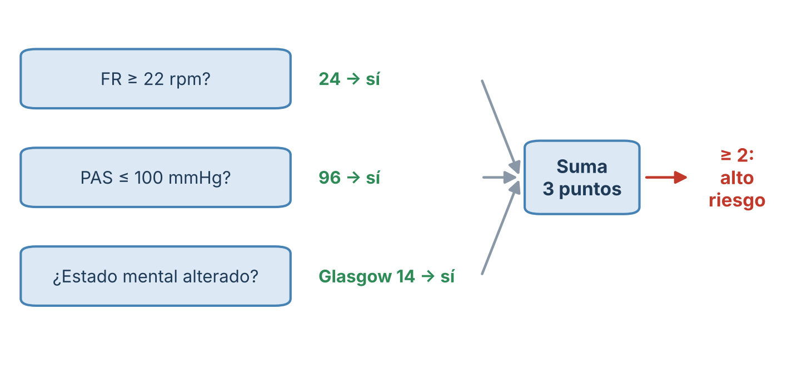
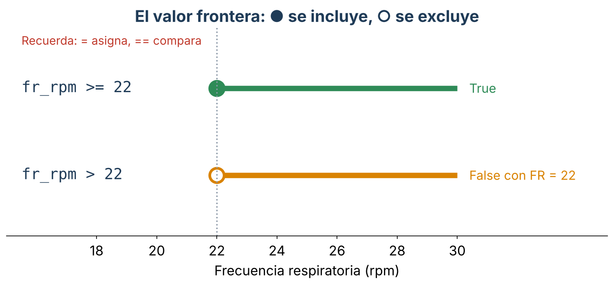
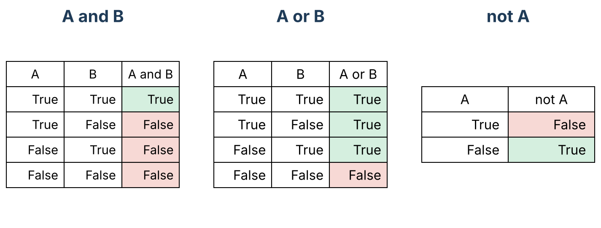
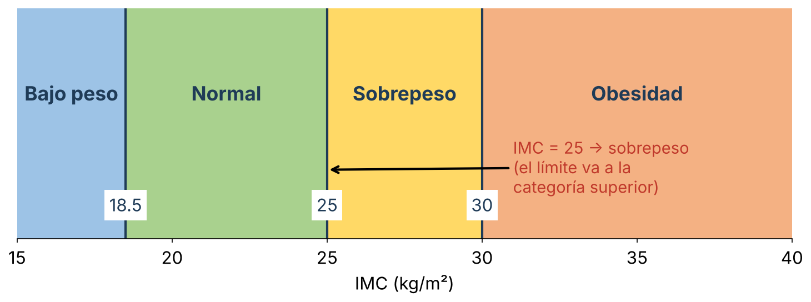

Bioestadística (1964) · Grado en Medicina · Curso 2027-2028
Tema 30Lógica booleana y estructuras condicionales aplicadas a la clasificación clínica
Módulo 1. Descubriendo Python
Fernando Borrás Rocher · Universidad Miguel Hernández de Elche · CC BY 4.0
Objetivos de aprendizaje
Al terminar esta sesión serás capaz de:
- Escribir comparaciones entre valores clínicos y obtener un resultado lógico (
TrueoFalse). - Combinar varias condiciones con los operadores
and,orynot. - Construir estructuras
if,elifyelsepara clasificar a un paciente según criterios clínicos. - Ordenar correctamente las condiciones y tratar los límites de cada categoría.
- Manejar datos ausentes antes de aplicar una regla de decisión.
Cómo usar esta presentación
Usa el selector de arriba para dar el tema en una sesión completa o en dos sesiones intercaladas.
🎓 Sesión de clase magistral
- 1. Caso clínico de partida 5 min
- 2. Conceptos clave 10 min
- 5. Autoevaluación 5 min
Explica los conceptos, haz la pausa activa y cierra con las ideas clave.
💻 Sesión de Colab
- 3. Demostración: reglas clínicas en Python 20 min
- 4. Práctica en la app Bioestadística 10 min
- 5. Autoevaluación 5 min
Cada estudiante abre su copia del cuaderno, predice el resultado y después ejecuta la celda.
Teclas: ← → para pasar · N notas del profesor · M cambiar de modo · F pantalla completa · Esc índice.
1. Caso clínico de partida
Antonio en Urgencias: la escala qSOFA

- Cada criterio es una pregunta de sí o no: una comparación.
- La puntuación decide la conducta: es una estructura condicional.
- Escrita en Python, la regla se aplica igual a 1 o a 10.000 pacientes.
2. Conceptos clave
2.1 Comparaciones

Una comparación devuelve un valor lógico (bool): True o False.
| Operador | Significado | Ejemplo clínico | Resultado con FR = 24 |
|---|---|---|---|
== |
Igual a | fr_rpm == 22 |
False |
!= |
Distinto de | fr_rpm != 22 |
True |
< / > |
Menor / mayor que | fr_rpm > 22 |
True |
<= / >= |
Menor o igual / mayor o igual | fr_rpm >= 22 |
True |
in |
Pertenece a | "tos" in sintomas |
Depende de la lista |
No confundas = con ==. Un solo signo asigna un valor; dos signos comparan.
2. Conceptos clave
2.2 Operadores lógicos
and, or, not

- and: hacen falta las dos condiciones. or: basta con una.
- La hipertensión es «PAS ≥ 140 or PAD ≥ 90»: con and se perderían pacientes.
2. Conceptos clave
2.3 Estructuras condicionales
if, elif, else: el primer criterio que se cumple gana

- Las categorías se comprueban en orden: solo se ejecuta una rama.
- Los errores típicos están en las fronteras: ¿un IMC de 25 es normal o sobrepeso?
Pregunta para la clase: ¿Qué categoría daría vuestro código a un IMC de exactamente 30?
Pausa activa
Piensa 30 segundos, comenta con quien tienes al lado y vota.
Con fr = 22 y pas = 100, ¿cuánto vale (fr >= 22) + (pas < 100)?
En la sesión de Colab
Lo que acabas de ver se comprueba con datos en el cuaderno del Tema 30.
- Abre el cuaderno y guarda tu copia: Archivo → Guardar una copia en Drive.
- Ejecuta la celda de configuración.
- Ve a la demostración y predice cada resultado antes de ejecutar.
3. Demostración: reglas clínicas en Python
3.1 Comparaciones y operadores lógicos
▶ En tu cuaderno: 3.1 Comparaciones y operadores lógicos. Antes de ejecutar, escribe qué esperas obtener.
fr_rpm = 24
pas_mmHg = 96
estado_mental_alterado = True
print("FR ≥ 22:", fr_rpm >= 22)
print("PAS ≤ 100:", pas_mmHg <= 100)
print("FR alta y PAS baja:", fr_rpm >= 22 and pas_mmHg <= 100)
print("Alguno de los tres:", fr_rpm >= 22 or pas_mmHg <= 100 or estado_mental_alterado)3. Demostración: reglas clínicas en Python
3.2 La escala qSOFA
▶ En tu cuaderno: 3.2 La escala qSOFA. Antes de ejecutar, escribe qué esperas obtener.
En Python, True vale 1 y False vale 0 al sumar. Así, la puntuación qSOFA es la suma de los tres criterios.
qsofa = (fr_rpm >= 22) + (pas_mmHg <= 100) + estado_mental_alterado
print("qSOFA:", qsofa)
if qsofa >= 2:
print("qSOFA positivo: paciente con mayor riesgo. Valorar disfunción orgánica.")
else:
print("qSOFA negativo. Mantener la vigilancia clínica.")3. Demostración: reglas clínicas en Python
3.3 Varias categorías: el índice de masa corporal
▶ En tu cuaderno: 3.3 Varias categorías: el índice de masa corporal. Antes de ejecutar, escribe qué esperas obtener.
Con elif se encadenan tantas categorías como haga falta. Clasificación de la OMS para adultos:
| IMC (kg/m²) | Categoría |
|---|---|
| < 18,5 | Bajo peso |
| 18,5 a 24,9 | Normal |
| 25,0 a 29,9 | Sobrepeso |
| ≥ 30,0 | Obesidad |
peso_kg = 68
talla_m = 1.63
imc = peso_kg / talla_m ** 2
if imc < 18.5:
categoria = "bajo peso"
elif imc < 25:
categoria = "normal"
elif imc < 30:
categoria = "sobrepeso"
else:
categoria = "obesidad"
print(f"IMC {imc:.1f} kg/m²: {categoria}")Observa que la segunda condición es solo imc < 25. No hace falta escribir imc >= 18.5 and imc < 25: si el IMC fuera menor de 18,5, ya se habría ejecutado la primera rama.
3. Demostración: reglas clínicas en Python
3.4 Dos variables a la vez: la presión arterial
▶ En tu cuaderno: 3.4 Dos variables a la vez: la presión arterial. Antes de ejecutar, escribe qué esperas obtener.
La guía de la Sociedad Europea de Hipertensión (2023) clasifica la presión arterial en consulta así:
| Categoría | PAS (mmHg) | PAD (mmHg) | |
|---|---|---|---|
| Óptima | < 120 | y | < 80 |
| Normal | 120 a 129 | y/o | 80 a 84 |
| Normal-alta | 130 a 139 | y/o | 85 a 89 |
| Hipertensión grado 1 | 140 a 159 | y/o | 90 a 99 |
| Hipertensión grado 2 | 160 a 179 | y/o | 100 a 109 |
| Hipertensión grado 3 | ≥ 180 | y/o | ≥ 110 |
Si la sistólica y la diastólica caen en categorías distintas, se asigna la más alta. Por eso conviene empezar comprobando la categoría más grave y usar or.
pas_mmHg = 148
pad_mmHg = 92
if pas_mmHg >= 180 or pad_mmHg >= 110:
categoria_pa = "hipertensión grado 3"
elif pas_mmHg >= 160 or pad_mmHg >= 100:
categoria_pa = "hipertensión grado 2"
elif pas_mmHg >= 140 or pad_mmHg >= 90:
categoria_pa = "hipertensión grado 1"
elif pas_mmHg >= 130 or pad_mmHg >= 85:
categoria_pa = "normal-alta"
elif pas_mmHg >= 120 or pad_mmHg >= 80:
categoria_pa = "normal"
else:
categoria_pa = "óptima"
print(f"{pas_mmHg}/{pad_mmHg} mmHg: {categoria_pa}")Prueba con 132/101 mmHg: la sistólica sería normal-alta, pero la diastólica lo lleva a hipertensión grado 2.
3. Demostración: reglas clínicas en Python
3.5 Pertenencia a una lista: síntomas de alarma
▶ En tu cuaderno: 3.5 Pertenencia a una lista: síntomas de alarma. Antes de ejecutar, escribe qué esperas obtener.
sintomas = ["fiebre", "tos", "disnea"]
sintomas_alarma = ["disnea", "dolor torácico", "hemoptisis"]
if "disnea" in sintomas:
print("Presenta disnea: valorar saturación de oxígeno.")
alarma = any(s in sintomas_alarma for s in sintomas)
print("¿Algún síntoma de alarma?", alarma)La función any() devuelve True si alguno de los elementos cumple la condición; all() devuelve True si los cumplen todos. La sintaxis for s in sintomas se explica en el Tema 40.
3. Demostración: reglas clínicas en Python
3.6 Comprobar primero que el dato existe
▶ En tu cuaderno: 3.6 Comprobar primero que el dato existe. Antes de ejecutar, escribe qué esperas obtener.
Una regla clínica no se puede aplicar si falta un dato. Comparar None con un número da error, así que primero se comprueba que el valor existe con is None.
glucemia_ayunas_mg_dl = None # pendiente de resultado
if glucemia_ayunas_mg_dl is None:
print("Glucemia no disponible: no se puede clasificar.")
elif glucemia_ayunas_mg_dl >= 126:
print("Compatible con diabetes (confirmar con una segunda determinación).")
elif glucemia_ayunas_mg_dl >= 100:
print("Glucemia basal alterada.")
else:
print("Glucemia en ayunas normal.")Ampliación
Ampliación: la expresión condicional de una línea
temperatura_c = 38.4
estado = "febril" if temperatura_c >= 38 else "afebril"
print(estado)Ampliación
Ampliación: errores frecuentes
Ordenar mal las condiciones. Si se comprueba imc >= 25 antes que imc >= 30, un paciente con IMC 34 sale como sobrepeso. Se ejecuta siempre la primera rama que se cumple.
imc = 34
if imc >= 25:
print("Clasificación errónea: sobrepeso")
elif imc >= 30:
print("Nunca se llega aquí")Equivocar los límites. «PAS ≤ 100» no es lo mismo que «PAS < 100». Un paciente con 100 mmHg exactos cumple el primer criterio, pero no el segundo. Comprueba siempre los valores frontera.
Usar = en lugar de == dentro de un if: produce SyntaxError.
Olvidar los dos puntos o la sangría. Producen SyntaxError e IndentationError.
Comparar texto sin normalizarlo. "Disnea" == "disnea" es False. Normaliza con .lower() antes de comparar.
Escribir mal una condición compuesta. fr_rpm >= 22 or 30 es siempre verdadera, porque 30 por sí solo se considera verdadero. Lo correcto es repetir la variable: fr_rpm >= 22 or fr_rpm >= 30.
4. Práctica en la app Bioestadística
Abre la unidad 30 de la app Bioestadística y completa sus misiones:
- Misión básica (sin asistente): predecir el resultado de comparaciones y condiciones compuestas con datos clínicos.
- Misión clínica (con pistas): programar la clasificación de la glucemia en ayunas y la de la presión arterial, comprobando los valores frontera.
- Misión reto (con asistente): programar la escala CURB-65 de gravedad de la neumonía. Verificar con casos conocidos el código que proponga el asistente.
Al terminar, exporta el informe de la unidad.
5. Autoevaluación
Responde sin asistente y sin ejecutar código.
5. Autoevaluación
Elige una opción: verás la explicación.
Con fr = 22 y pas = 100, ¿cuánto vale (fr >= 22) + (pas < 100)?
Un paciente tiene 130/112 mmHg. Según el código del apartado 3.4, ¿cómo se clasifica?
¿Qué expresión es verdadera solo si el paciente tiene fiebre y no es alérgico a la penicilina?
En una cadena if/elif para el IMC, ¿por qué se comprueba imc < 18.5 antes que imc < 25?
La glucemia de un paciente vale None. ¿Qué ocurre al ejecutar if glucemia >= 126:?
Ideas clave
- Una comparación produce
TrueoFalse;and,orynotlas combinan. if,elifyelsetraducen una regla clínica a código; solo se ejecuta la primera rama que se cumple.- Con categorías ordenadas, empieza por un extremo y respeta los límites exactos de la guía.
- Comprueba que el dato existe (
is None) antes de aplicar una regla.
Glosario
| Término | Definición |
|---|---|
Valor lógico (bool) |
True o False |
| Operador de comparación | Símbolo que compara dos valores: ==, !=, <, >, <=, >= |
| Operador lógico | and, or, not: combinan o invierten condiciones |
| Estructura condicional | Bloque if/elif/else que ejecuta código según se cumplan condiciones |
| Sangría | Espacios al inicio de la línea que indican qué código pertenece a cada bloque |
| Valor frontera | Valor exacto del límite entre dos categorías |
Para saber más
- Tutorial de Python: la sentencia if
- Singer M, et al. The Third International Consensus Definitions for Sepsis and Septic Shock (Sepsis-3). JAMA. 2016;315(8):801-810. doi:10.1001/jama.2016.0287
- Mancia G, et al. 2023 ESH Guidelines for the management of arterial hypertension. J Hypertens. 2023;41(12):1874-2071. doi:10.1097/HJH.0000000000003480